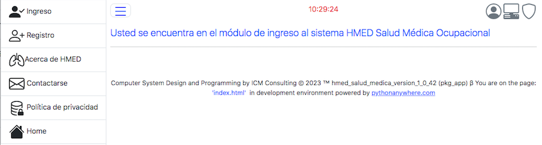

Portal HMED¶
HMED es un sistema programado para ejecutarse en la nube. En Internet, HMED es un portal, que concretamente es un sitio web que ofrece al usuario, De forma fácil e integrada, acceso a una serie de recursos y servicios relacionados con la medicina ocupacional.
Utilice las opciones del portal para: ingresar al sistema si ya es usuario registrado, si aún no es un usuario registrado, utilice la opción de registro para registrar un usuario, para conocer más sobre el sistema utilice la opción acerca de HMED; si desea ponerse en contacto con el proveedor del sistema utilice la opción de contacto. Para obtener información sobre la política de privacidad del sistema utilize la opción de política de privacidad.